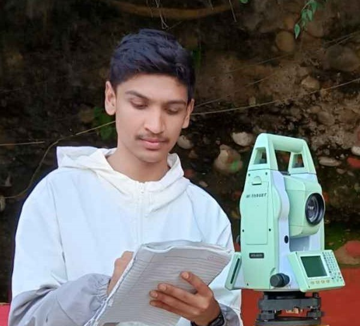
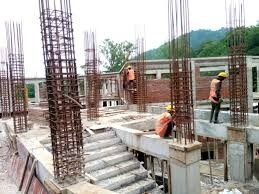
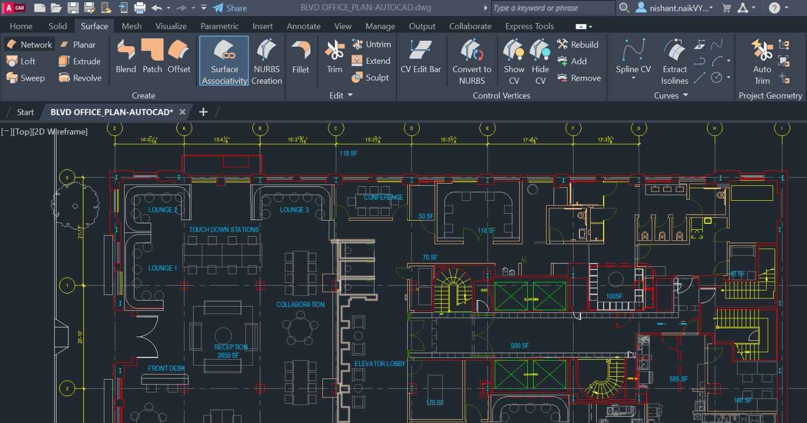
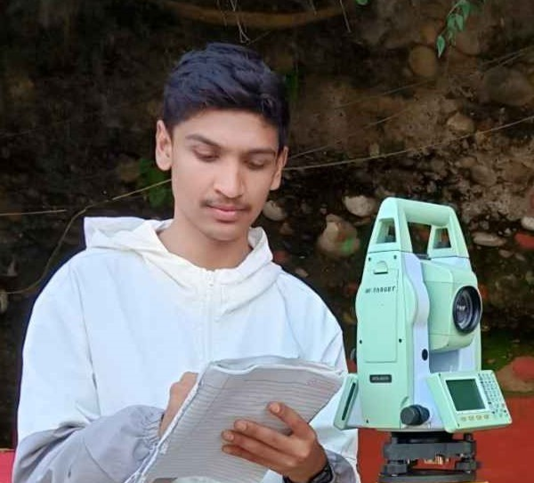
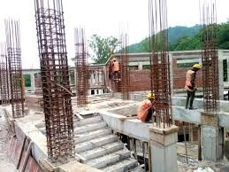
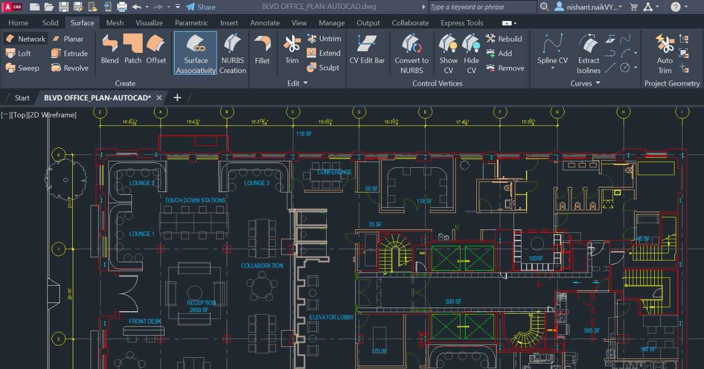
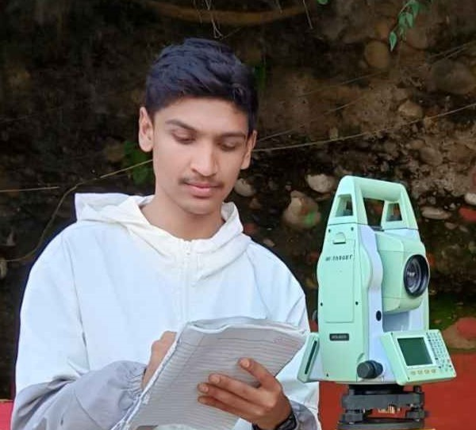
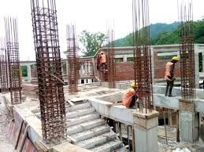
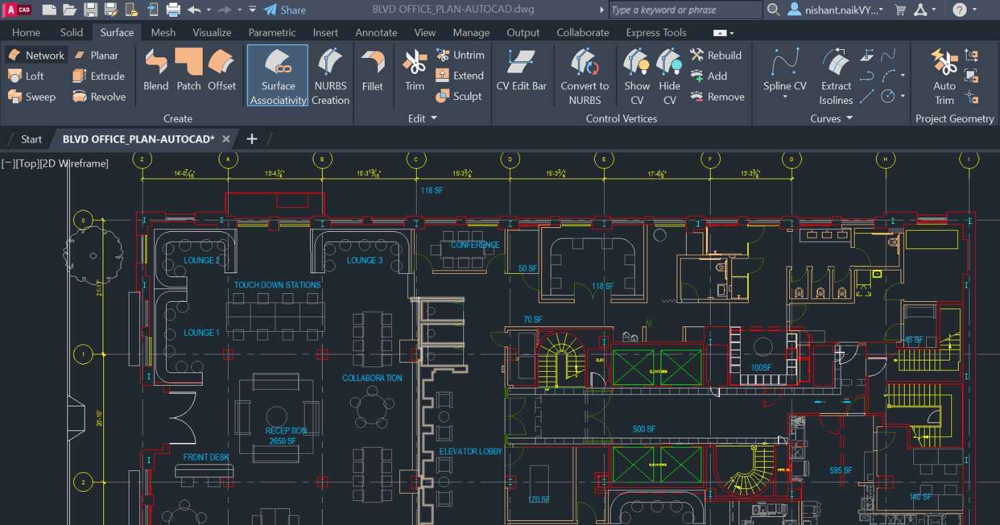

Civil Engineering Projects
 





Exploring my experience and expertise in Civil Engineering.
I completed my diploma in Civil Engineering in Nepal, where I gained hands-on experience in site supervision, building construction, valuation surveys, and design work. My expertise lies in ensuring the quality of construction projects and using advanced tools to create precise designs and blueprints.
Below are some of the photos from various civil engineering projects I’ve been involved with, showcasing my practical experience.


